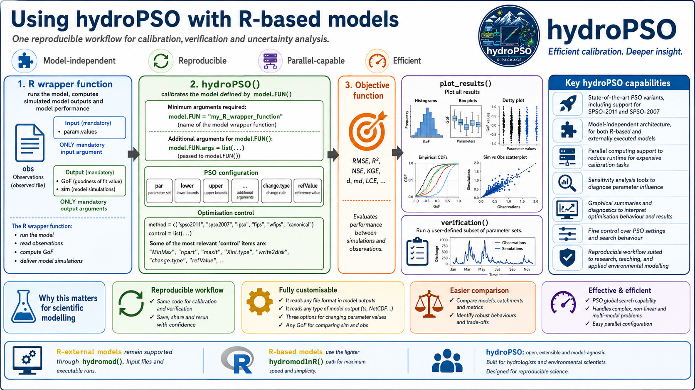

Why R-based models matter
Many hydrological and environmental models used in research are already
available as R functions. For those models, hydroPSO can
run the calibration directly in R, without preparing temporary input
files, launching an external executable, or parsing model-output files
after every particle evaluation.
This is the role of fn = "hydromodInR": it keeps the PSO
engine general, while letting the modeller provide the R function that
turns a candidate parameter set into simulated values and a
goodness-of-fit value. The same idea supports lumped conceptual models,
snow-rainfall-runoff models, regional experiments, sensitivity analyses,
and reproducible teaching examples.

The basic contract
An R-based calibration with hydroPSO has a compact
contract:
-
hydroPSO()proposes a parameter set inside the ranges defined bylowerandupper. -
hydromodInR()passes that parameter set to the user-defined R model wrapper. - The wrapper runs the model and computes, or returns enough information to compute, the selected objective function.
- The PSO engine updates the swarm using the resulting goodness-of-fit value.
- The same model wrapper can be reused later in
verification()andplot_results().
In practice, the modeller controls the scientific part of the
workflow: parameter meaning, model states, warm-up period, observations,
transformations, objective function, and diagnostic outputs.
hydroPSO controls the optimisation bookkeeping.
out <- hydroPSO(
fn = "hydromodInR",
lower = lower,
upper = upper,
model.FUN = "run_my_model",
model.FUN.args = list(
inputs = InputsModel,
run.options = RunOptions,
obs = Qobs
)
)The model function can be as thin or as rich as needed. For example,
it can call TUWmodel, airGR::RunModel_GR4J(),
airGR::RunModel_CemaNeigeGR6J(), or a project-specific
model function, then return the value that hydroPSO must
minimise or maximise.
Why this is useful for scientific work
<strong>Transparent parameter mapping</strong>
Parameters enter the model as an R object, so names, units, transformations and bounds can be checked directly in the calibration script.<strong>Less file-system overhead</strong>
R-based runs avoid repeated writing, copying and reading of model input and output files during every particle evaluation.<strong>Cleaner verification</strong>
The same wrapper used for calibration can be reused with independent periods, behavioural parameter sets, and alternative objective functions.<strong>Comparable experiments</strong>
Several model structures can be calibrated with the same PSO settings, objective functions and plotting tools.For hydrologists and environmental scientists, this makes
hydroPSO useful as a bridge between model development and
model evaluation. A prototype can be calibrated while it is still an R
function, and later compared with established model structures using a
common optimisation framework.
Examples covered by the hydroPSO tutorials
The R-based tutorials use the Trancura River Basin in Chile to show the same workflow across different hydrological model structures:
- GR4J: a parsimonious rainfall-runoff model commonly used for catchment-scale hydrology.
- CemaNeige-GR6J: a snow-aware model configuration for basins where snow accumulation and melt affect streamflow.
- TUWmodel: a semi-distributed conceptual model with a larger parameter set and a different internal structure.
These examples are intentionally complementary. They show that the R-based interface is not tied to a single package or model family; it is tied to a reproducible modelling contract.
Relationship with R-external models
R-external models remain fully supported by hydroPSO.
They are still the right choice when the scientific model is a compiled
program or a command-line tool that communicates through input and
output files. In that workflow, hydromod() modifies files,
launches the model run, reads the model output and evaluates the
objective function.
R-based models use the lighter hydromodInR() path. The
optimisation logic is the same, but the model evaluation happens
directly through R function calls. This makes the R-based workflow
especially attractive for exploratory research, teaching, multi-model
comparison, and fast iteration on new model structures.
Since hydroPSO v0.6-0, R-based models can also use
change.type = c("repl", "addi", "mult"), with one change
type for all parameters or one change type per parameter. This gives
R-based and R-external models the same language for replacement,
additive and multiplicative parameter updates.
A practical rule
Use fn = "hydromodInR" when the model can be evaluated
as an R function and the main scientific task is to explore parameter
values, objective functions, calibration periods or model structures.
Use the R-external workflow when the model must be driven through files
and an external executable. Both paths use the same PSO engine; the
difference is how a candidate parameter set is translated into one model
evaluation.